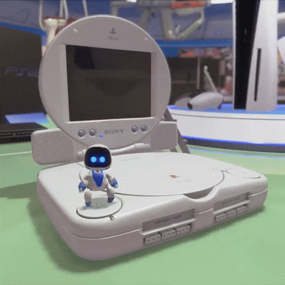
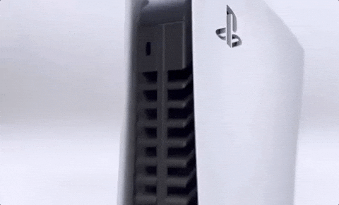

| SONY PLAYSTATION | |||||||
|---|---|---|---|---|---|---|---|
| Año | Consola | Fabricante | Juegos populares | Innovaciones | Imagen | Vídeo 1 | Vídeo 2 |
| 1994 | Sony | Final Fantasy VII Gran Turismo |
Primer gran éxito de Sony Uso de CDs Gráficos 3D |
 | |||
| 2020 | Sony | Demon's Souls Spider-Man: Miles Morales |
SSD ultrarrápido Ray tracing Retrocompatibilidad |
 | |||